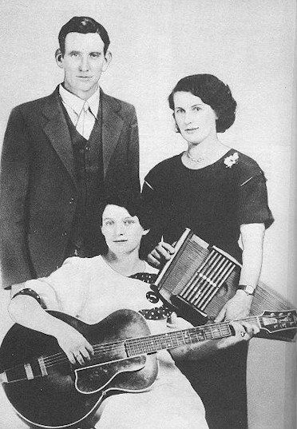
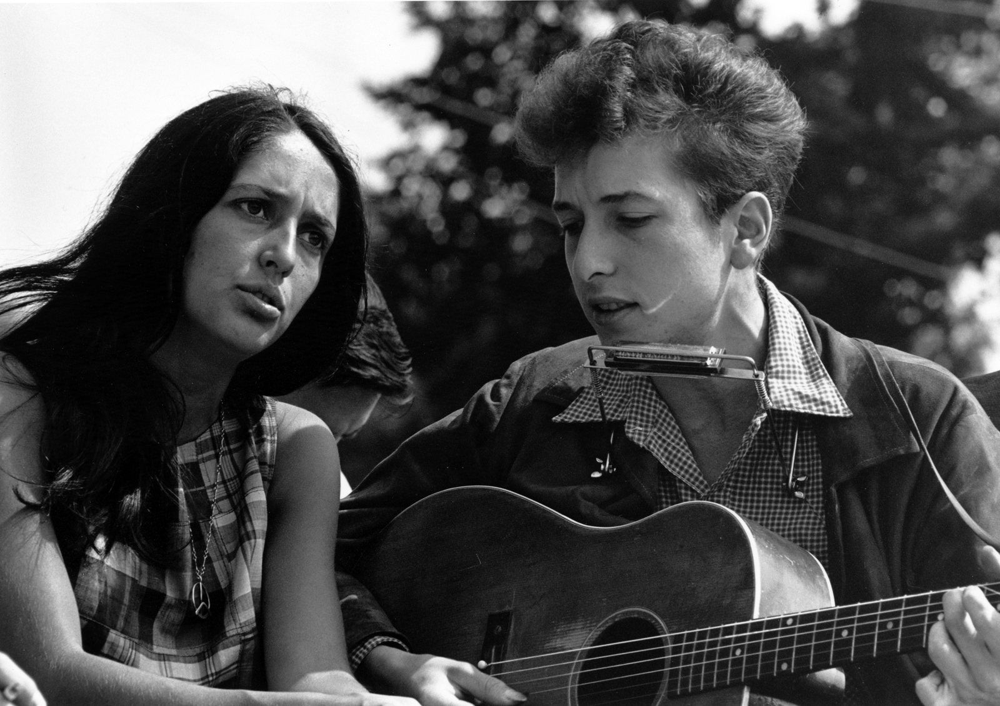

1927 年 7 月底，美国田纳西州和弗吉尼亚州交界的小城布里斯托。
一个叫 Ralph Peer 的唱片公司星探，在一栋帽子厂的楼上租了个房间，挂上毯子吸音，架起一台当时最新的电子录音设备。他在报纸上登了广告：会唱歌、会拉琴的人，来录音，有钱拿。
山里的人们开车、坐火车、甚至走路来了。其中有一家三口：一个卖果树苗的男人，他的妻子，和他十八岁的弟媳。他们叫 Carter 一家。还有一个得了肺结核、当过铁路工人的年轻人，叫 Jimmie Rodgers。
这两组人后来被称为“乡村音乐的第一家庭”和“乡村音乐之父”。那两个星期的录音，后来被叫作乡村音乐的“大爆炸”。
为啥你的表格里没看到民谣
那张表是从布鲁斯往下画的：布鲁斯生出节奏布鲁斯，节奏布鲁斯生出摇滚，摇滚再分出朋克、金属……民谣在那张表里确实找不到，因为它不是布鲁斯的后代，而是另一条根。
美国流行音乐有两条主根：一条从西非经过奴隶制和南方的棉花田，长成了布鲁斯和福音；另一条从英格兰、苏格兰、爱尔兰的乡间，跟着移民来到美国南方的阿巴拉契亚山区，长成了山地民歌，后来又长成了乡村音乐和民谣。这两条根在南方的土里缠了一百多年，摇滚就是它们缠在一起后冒出来的。
所以这一章既是布鲁斯的“兄弟篇”，也是在补那张表的漏洞。顺序和布鲁斯那章一样：先讲它从哪里来，再拆零件（叙事曲、调式、乐器、节奏），然后沿着时间走：布里斯托、纳什维尔、蓝草、民谣复兴、插电，最后回到今天和中文世界。
01 / roots另一条根
先分清三个词
中文里“民歌”“民谣”“乡村”经常混着用，这一章会把它们分开：
- 民歌（folk song）：一个地方的老百姓世代口口相传的歌，通常不知道作者是谁，每个人唱的版本都不太一样。比如《茉莉花》、陕北信天游，也比如苏格兰的老叙事曲
- 民谣（folk music，尤其是 1940–60 年代的“民谣复兴”之后）：有名有姓的创作者，用民歌的方式（一把木吉他、简单的旋律、讲故事或讲道理的歌词）写自己的歌。Bob Dylan、齐豫、赵雷都属于这一类
- 乡村音乐（country）：美国南方山地民歌进入唱片和电台之后，发展出来的一个商业流派。它有自己的乐器、唱法、城市（纳什维尔）和排行榜
三者的关系可以这样记：民歌是老祖宗；乡村是它进城做了生意；民谣是它读了大学，开始思考社会。
两条根是怎么缠在一起的
一个容易被忽略的事实：乡村音乐最有代表性的乐器之一，班卓琴，其实来自非洲。被贩卖到美洲的西非人，按记忆中家乡的弹拨乐器（用葫芦和兽皮做琴箱），做出了最早的班卓琴。19 世纪，它先是黑人音乐的乐器，后来才被白人山民接过去，成为山地音乐和蓝草的标志。
反过来也一样。南方的黑人和白人常常在同一个矿区、同一条铁路、同一片工厂里干活，听同一个电台。乡村之父 Jimmie Rodgers 的歌叫《Blue Yodel》，里面就有大量布鲁斯的味道；而很多黑人布鲁斯乐手的曲库里，也有白人的山地歌曲。两种音乐的人群被分开了，声音却一直在互相借。
02 / ballad叙事曲：一首歌讲一个故事
如果说布鲁斯的核心是“一种感觉”，那么民歌的核心就是“一个故事”。英语里管这种讲故事的长歌叫 ballad，中文一般译作“叙事曲”（注意它和今天流行音乐里的“抒情慢歌 ballad”不是一回事）。
从英国的乡间到美国的山里
19 世纪末，哈佛大学教授 Francis James Child 把英格兰和苏格兰流传的老叙事曲收集整理成书，一共 305 首，后来人们叫它们“Child 叙事曲”。内容五花八门：谋杀、殉情、骑士、鬼魂、海难、被抛弃的恋人。
到了 1916 到 1918 年，英国民歌收集者 Cecil Sharp 跑到美国的阿巴拉契亚山区，发现了一件让他吃惊的事：很多在英国本土早已没人会唱的老歌，在这些与世隔绝的山村里还活着。山民的祖先 18 世纪从苏格兰、北爱尔兰和英格兰北部移民过来，在山里住下，几代人没怎么和外界来往，就把祖先的歌原样保存了下来，只是慢慢改了一些词，换上了美国的地名。
分节歌：旋律不变，故事往前走
叙事曲最重要的结构特点叫“分节歌”（strophic form）：同一段旋律反复唱很多遍，每一遍换一段歌词。旋律只是一辆车，真正往前走的是故事。一首叙事曲可以有十几段甚至几十段。
这和我们今天熟悉的流行歌很不一样。流行歌有主歌、副歌、桥段，靠副歌的重复让你记住它；叙事曲没有副歌，靠的是“接下来发生了什么”。
第一遍只有人声，像在山里的厨房里唱给孩子听；第二遍加入木吉他；第三遍加入小提琴和低音。旋律一个音都没变，变的是“讲故事的方式”。
03 / modes山里的音阶：调式
听阿巴拉契亚的老歌，你常常会觉得它“有点古老”“有点怪”，既不像大调那么明亮，也不像小调那么悲伤。这种感觉来自调式（mode）。
大调的几个“亲戚”
布鲁斯那一章讲过大调音阶：do re mi fa sol la si do。调式可以理解为大调音阶的几个“亲戚”：七个音大部分相同，只改其中一两个音，整体的气质就变了。山地民歌里最常见的有三种：
- 伊奥尼亚调式：就是普通的大调，明亮、稳定
- 混合利底亚调式（Mixolydian）：把大调的第七个音降低半音。明亮里带一点粗犷和“没说完”的感觉，苏格兰风笛、很多老派小提琴曲都是这个味道
- 多利亚调式（Dorian）：把第三个音和第七个音都降低半音。偏暗，但不像普通小调那么悲伤，有一种古老、朴素的忧郁。英国老歌《Scarborough Fair》就是这个调式
明亮、规矩，像儿歌。
只改了第七个音。听结尾前那个音，变“野”了。
再改第三个音。整首歌一下子暗了下来，变得古老。
最后一个按钮在旋律下面一直保持着 D 和 A 两个低音，这叫“持续音”（drone）。阿巴拉契亚扬琴（dulcimer）、风笛和很多老派小提琴演奏都有这种一直嗡嗡响的底子，这也是“古老感”的来源之一。
04 / string band弦乐队：七件乐器
布鲁斯的乐队后来以电吉他和口琴为核心；山地音乐和乡村的乐队，核心是一组不插电的弦乐器，叫“弦乐队”（string band）。它们的组合，就是乡村和蓝草的声音。
节奏的骨架：低音加扫弦。
鼓面做琴箱，声音亮、短、跳。
和古典小提琴是同一件乐器，拉法不同。
八根弦两两成对，常用“轮拨”。
平放在腿上，用金属滑棒弹。
和布鲁斯是同一种十孔口琴。
站着拨，一拍一个音。
这就是一支小小的蓝草乐队。
fiddle 和 violin
同一把小提琴，在音乐厅里叫 violin，在乡村舞会上叫 fiddle。区别在拉法：古典小提琴追求圆润、连贯、宽广的揉弦；fiddle 追求节奏感，弓子更短更“锯”，经常同时拉两根弦（双音），滑进滑出，给跳舞的人打拍子。
班卓琴：从非洲来
现代五弦班卓琴有一个奇特的设计：第五根弦只有其他弦的四分之三长，弦钮装在琴颈中间，它永远弹同一个高音，像一个不停响的“叮”。这个持续的高音和上一节讲的持续音是一个思路。
共鸣吉他和踏板电吉他
1920 年代，Dopyera 兄弟为了让吉他在乐队里更响，在琴箱里装了一个金属的“喇叭”（共鸣盘），这就是 Dobro。它平放在腿上，用金属滑棒弹，声音像在哭。后来这个思路电气化，就成了踏板电吉他（pedal steel），那种“哭腔”就是 1950 年代以后乡村音乐最标志性的声音。
05 / rhythm节奏：boom-chick 与华尔兹
布鲁斯的灵魂是“摇摆”（shuffle）。乡村的灵魂是一种更简单、更稳的律动，叫 boom-chick：低音“嘭”一下，扫弦“恰”一下，嘭、恰、嘭、恰。
- boom：在第 1、3 拍弹一个低音，通常在和弦的根音和五音之间交替
- chick：在第 2、4 拍扫一下高音弦
这个节奏一个人就能弹出“贝斯加鼓”的效果，非常适合一个人一把吉他给一屋子人伴奏跳舞。
低音在根音和五音之间换，第 2、4 拍扫弦。
用拇指在低音弦上弹旋律，其他手指扫弦填空。旋律和伴奏一把吉他全包。
嘭、恰、恰。乡村有大量 3/4 拍的慢歌，用来跳慢舞。
刷子打军鼓，加闷音吉他，像火车轮子压过铁轨。
第二种叫“Carter 式扫弦”（Carter scratch），来自 Carter 一家的吉他手 Maybelle Carter。她用拇指在低音弦上弹出旋律，其他手指在高音弦上扫出节奏，一把吉他同时担起旋律和伴奏。在此之前，吉他在乡间乐队里主要只是伴奏，她把它变成了能独当一面的主角。今天几乎所有学乡村吉他的人，都要练她 1928 年录的《Wildwood Flower》。
第四种“火车节奏”来自 Johnny Cash。他的乐队只有三个人，吉他手 Luther Perkins 用闷音弹出单调的“咔恰咔恰”，鼓手用刷子在军鼓上一直扫，听起来就像火车。火车在乡村和布鲁斯里都是最常见的意象之一：离开、流浪、回不去的家。
06 / bristol 19271927 年的布里斯托
唱片公司发现了山里
1920 年代，留声机走进了美国的普通家庭，唱片公司急需新的东西来卖。1923 年，Ralph Peer 在亚特兰大给一个叫 Fiddlin' John Carson 的老琴手录了一张唱片。他本人觉得录得很难听，结果在南方卖得出奇地好。唱片公司这才意识到：南方山里的穷人也是顾客，他们想听自己的音乐。
于是有了本章开头的那一幕。1927 年夏天，Peer 带着设备来到布里斯托，两个星期里录了十几组音乐人。Carter 一家录下了他们的家庭和声和老歌，Jimmie Rodgers 录下了他混着布鲁斯和约德尔唱法的歌。两者分别代表了乡村音乐后来的两个方向：一个是家庭、信仰、老歌和山；一个是流浪、火车、酒吧和孤独的男人。

约德尔：在胸声和假声之间跳
Jimmie Rodgers 的招牌是“约德尔”（yodel）：声音在低沉的胸声和尖细的假声之间快速来回跳，中间那个“断裂”的瞬间就是它的味道。约德尔原本来自阿尔卑斯山区，Rodgers 把它和布鲁斯的十二小节、黑人的唱腔混在一起，发明了自己的“蓝色约德尔”。
注意听高低之间那一下“翻”过去的感觉。合成的人声当然没有真人那么自然，可以对照推荐曲目里的《Blue Yodel》听真的。
同样的人，两种唱片
这里有一个和布鲁斯那章呼应的重要细节。唱片公司把南方音乐分成两个货架：白人音乐人的唱片叫“hillbilly 唱片”（山里人唱片），黑人音乐人的唱片叫“race 唱片”（种族唱片）。它们在同一个地区、经常由同一批星探录制，音乐上也在互相借用，却被按肤色贴上了不同的标签，卖给不同的顾客。
1949 年，《公告牌》杂志把这两个排行榜分别改名为“乡村与西部”和“节奏布鲁斯”。名字体面了，分隔还在。我们后面会看到，九十年后，这个问题又出现了一次。
07 / nashville纳什维尔：三个和弦与真话
收音机里的大舞台
如果说唱片让乡村音乐被录下来，那么收音机让它被所有人听到。1925 年，田纳西州纳什维尔的一家电台开了一档周六晚上的节目，一开始叫“WSM 谷仓舞会”，两年后改名叫 Grand Ole Opry（大奥普里）。它一直播到今天，是美国历史最长的电台节目之一。1943 年到 1974 年，它在一座由教堂改建的礼堂 Ryman 里直播，那里后来被称为“乡村音乐的母亲教堂”。
Opry 让纳什维尔变成了乡村音乐的首都：唱片公司、版权公司、录音棚、乐手都聚集在这里。直到今天，“纳什维尔”在英语里几乎就是“乡村音乐产业”的代名词。
honky-tonk：酒馆里的乡村
二战前后，大量南方人离开农村，到城市和油田打工。他们下班后去路边的小酒馆喝酒跳舞，这种酒馆叫 honky-tonk。为了在嘈杂的酒馆里被听见，乐队加上了电吉他、鼓和踏板电吉他，歌也从山和上帝，变成了酒、离婚、失恋和孤独。
这种风格最重要的人物是 Hank Williams。他只活了 29 岁（1953 年元旦死在去演出的汽车后座上），却写下了乡村音乐里最多的经典。他的歌简单到几乎每个人都会弹，歌词直白到让人不好意思，但就是能刺穿人心。纳什维尔的词曲作者 Harlan Howard 后来说，一首好的乡村歌就是“三个和弦和真话”（three chords and the truth），这句话几乎成了乡村音乐的定义。
和弦里某一个音被“推”上去或“滑”下来，声音像在叹气。
低音、刷子鼓、电吉他和踏板电吉他，酒馆里的慢舞。
纳什维尔数字系统
纳什维尔的录音乐手发明了一个特别实用的东西。1950 年代末，伴唱组合 Jordanaires 的歌手 Neal Matthews 开始用数字代替和弦名记谱：一个调里的第一个和弦写 1，第四个写 4，第五个写 5。
好处是：乐谱和调无关。歌手今天嗓子不好，想降两个调？乐手们看着同一张“1 4 1 5”的谱子，直接在新的调里弹就行，不用重新写谱。今天纳什维尔的录音棚还在用这套方法。
三个调听起来“是同一首歌”，只是整体高低不同。这正是布鲁斯那章讲的 I、IV、V（这里写成 1、4、5）：它们之间的关系才是一首歌的“形状”，具体从哪个音开始并不重要。
纳什维尔之声和贝克斯菲尔德之声
1950 年代中期，摇滚乐来了，乡村唱片的销量被打得很惨。纳什维尔的制作人 Chet Atkins 和 Owen Bradley 的对策是：去掉“土味”，拿掉小提琴和班卓琴，换上弦乐和伴唱，做得像流行歌一样顺滑，这叫“纳什维尔之声”，代表歌手是 Patsy Cline。
与此同时，加州小城贝克斯菲尔德的乐手们反其道而行：用响亮、尖锐的 Telecaster 电吉他和简单直接的鼓，把乡村拉回酒馆，代表是 Buck Owens 和 Merle Haggard。这两种声音的拉扯，也就是“精致的流行化”和“回到粗糙的根”的拉扯，此后在乡村音乐里反复上演，一直到今天。
08 / bluegrass蓝草：更快、更高、更寂寞
1940 年代中期，肯塔基人 Bill Monroe 的乐队“蓝草男孩”（Blue Grass Boys）定型了一种新的弦乐风格，后来就以乐队名命名，叫“蓝草”（bluegrass）。蓝草基本只用不插电的弦乐器，但速度极快，每件乐器轮流独奏，像爵士乐一样炫技。
三指滚奏
1945 年加入 Monroe 乐队的班卓琴手 Earl Scruggs，带来了一种新弹法：用拇指、食指、中指三根手指，按固定的顺序飞快地轮流拨弦，叫“滚奏”（roll）。一小节连续弹八个音，像一串滚动的珠子。从那以后，这种连绵不断的班卓琴声就成了蓝草的标志。
慢速时你能听出 3 + 3 + 2 的分组；快起来以后，它就变成了一片闪闪发光的声音瀑布。
“高而寂寞的声音”
蓝草的另一个标志是和声。Monroe 唱得很高、很尖，带着一种紧绷的哀伤，人们叫它“高而寂寞的声音”（high lonesome sound）。蓝草乐队通常三个人一起唱：主唱唱旋律，“男高音”在主唱上面唱一个更高的声部，“男中音”在主唱下面补一个声部，三个音刚好组成一个和弦。
单独的旋律。
在上面加一层，声音开始“发亮”。
三个声部，完整的蓝草三声部和声。
蓝草还有一个和摇滚的隐秘联系：1954 年，Elvis Presley 在 Sun 唱片录的第一张单曲，B 面就是 Bill Monroe 的《Blue Moon of Kentucky》。他把一首蓝草华尔兹改成了 4/4 拍的快歌。布鲁斯那章说摇滚是“黑人的节奏布鲁斯加上白人的乡村”，这首歌就是那个“白人乡村”的一半。
09 / folk revival民谣复兴：一把吉他和一句话
当纳什维尔在把乡村做成生意的时候，另一群人在做相反的事：他们把民歌当作“人民的声音”，拿它来讲社会和政治。这就是“民谣”这条支线。
收集者：Lomax 父子
1930 年代，John Lomax 和儿子 Alan Lomax 为美国国会图书馆背着沉重的录音机跑遍南方，在监狱、农场、教堂、工棚里录下了几千首民歌，不分黑人白人。他们在路易斯安那的监狱里遇到了一个叫 Lead Belly 的黑人犯人，他会唱几百首歌，后来成了纽约民谣圈的重要人物。布鲁斯那章说的田野录音，很多就出自他们之手。
Woody Guthrie：这台机器消灭法西斯
大萧条时期，俄克拉何马州遭遇了严重的沙尘暴，大批破产农民一路向西逃往加州。Woody Guthrie 就是其中之一。他一路扒火车、在营地里给难民唱歌，写下了上千首歌，讲沙尘暴、讲流民、讲工会。他在吉他上贴了一张标签，写着“这台机器消灭法西斯”。
1940 年，他对当时到处播放的爱国歌曲《God Bless America》不太服气，写了一首回应，就是后来的《This Land Is Your Land》。旋律借自一首 Carter 一家唱过的老歌，这也是民歌的传统：旧旋律可以随便拿来，配上新的话。
Pete Seeger 和“大家一起唱”
Guthrie 的朋友 Pete Seeger 是民谣复兴的另一位核心人物。他的组合 The Weavers 在 1950 年把 Lead Belly 的《Goodnight, Irene》唱成了全美第一。Seeger 最擅长的是让台下所有人跟着唱：他会先念一句歌词，大家跟着唱一句。在他看来，民歌不是让你坐着听的，是让你一起唱的。
1960 年代：格林威治村和 Bob Dylan
1950 年代末到 1960 年代初，民谣在美国大学生中突然流行起来。纽约的格林威治村到处是小咖啡馆，年轻人抱着木吉他轮流上台。1961 年，一个从明尼苏达来的 19 岁年轻人来到这里，他崇拜 Woody Guthrie，专门去医院看望病重的 Guthrie。他叫 Bob Dylan。
Dylan 和 Joan Baez 等人把民谣和民权运动、反战运动绑在了一起。他们的歌叫“抗议歌曲”（protest song）：旋律简单，像老民歌；歌词却在问当下的问题。1963 年 8 月 28 日，华盛顿的民权大游行上，Baez 和 Dylan 在马丁·路德·金发表《我有一个梦想》演讲的同一天登台演唱。

民谣吉他的指弹
民谣歌手常用一种叫“Travis 指弹”的弹法（以乡村吉他手 Merle Travis 命名）：拇指在低音弦上稳定地交替弹根音和其他音，像一个人在走路；其他手指在高音弦上弹出旋律或分解和弦，经常落在拍子的“缝”里。一把吉他听起来像两个人在弹。
先听只有拇指的版本：它稳得像节拍器。再听完整版本：上面的手指常常落在拇指的“后半拍”，这就是指弹的“跳”。
10 / plugged in插电之后
1965 年的新港
新港民谣音乐节（Newport Folk Festival）是民谣圈的圣地。1965 年 7 月 25 日，Bob Dylan 在这里带着一支插电的摇滚乐队上台。台下有人喝倒彩，民谣圈有人觉得他“背叛”了民谣。这一刻后来成了摇滚史上最有名的事件之一。
但这一年发生的“插电”不止这一次：
- The Byrds 把 Dylan 的《Mr. Tambourine Man》用电吉他翻唱，拿下全美第一。他们的十二弦电吉他发出叮叮当当、闪闪发亮的声音（jangle），这就是“民谣摇滚”（folk rock）
- Simon & Garfunkel 的《The Sound of Silence》原本是一首安静的木吉他歌，唱片卖得很差，两人都散伙了。1965 年，制作人 Tom Wilson 在他们不知情的情况下，给原录音加上了电吉他、贝斯和鼓，重新发行，结果在 1966 年初登上全美第一
温暖、安静，1963 年的格林威治村。
每个音都有一个高八度的“影子”，声音发亮，1965 年的民谣摇滚。
创作歌手、乡村摇滚和“法外之徒”
插电之后，民谣分成了好几条路：
- 创作歌手（singer-songwriter）：1970 年代初，Joni Mitchell、James Taylor、Carole King 等人用民谣的方式写非常私人的歌，讲自己的爱情、迷茫和生活。今天大多数“民谣歌手”其实都属于这个传统
- 乡村摇滚：The Byrds、Eagles 等乐队把乡村的和声、踏板电吉他和摇滚乐队结合在一起
- “法外之徒”乡村（outlaw country）：1970 年代，Willie Nelson、Waylon Jennings 等人受够了纳什维尔精致的流水线，坚持自己写歌、自己控制录音，长发、牛仔裤、不修边幅。Johnny Cash 也常被算进这一派，他在监狱里给犯人开演唱会，录下了《At Folsom Prison》（1968）
11 / now今天的乡村
今天的乡村音乐是美国最大的音乐产业之一，但它的声音已经和 1927 年相去甚远：电吉他、流行的副歌、现代的鼓，有时候还有电子节拍和说唱。
- 乡村流行：1990 年代的 Garth Brooks、Shania Twain 把乡村做成了体育场级别的流行音乐。Taylor Swift 2006 年作为乡村歌手出道，后来转向了流行
- Americana 和独立民谣：一批歌手和乐队回到了木吉他、班卓琴和老派和声，比如 Fleet Foxes、Mumford & Sons。后者那种“跺脚加拍手”的大合唱风格，在 2010 年代初非常流行
- 乡村说唱：2019 年，Lil Nas X 的《Old Town Road》把说唱的鼓点和乡村的意象混在一起
没有架子鼓，只有跺脚（底鼓）和拍手（军鼓）；班卓琴和木吉他快速扫弦；最后所有人一起喊。它其实是把老式的乡间聚会搬上了大舞台。
九十年后的同一个问题
《Old Town Road》在 2019 年 3 月登上了《公告牌》乡村榜，很快又被移了出去，理由是它“不够乡村”。很多人觉得，一个黑人说唱歌手唱牛仔和马，正好撞上了 1920 年代唱片公司划下的那条线。之后乡村歌手 Billy Ray Cyrus 加入做了混音版，这首歌在 Hot 100 榜首停留了 19 周，创下当时的纪录。
2024 年，Beyoncé 发行了乡村专辑《Cowboy Carter》，成为第一位登上《公告牌》乡村专辑榜榜首的黑人女歌手，专辑里还翻唱了 Dolly Parton 的《Jolene》；它后来拿下了格莱美年度专辑。同一年，黑人歌手 Shaboozey 的《A Bar Song (Tipsy)》也在 Hot 100 榜首停了 19 周，追平了《Old Town Road》的纪录。
回头看本章开头：乡村音乐最重要的乐器来自非洲，乡村之父唱的是布鲁斯，两条根从来就没分开过。被分开的只是货架。
小提琴领奏，吉他 boom-chick，像从留声机里传出来。
人声、踏板电吉他、刷子鼓，酒馆里的慢舞。
完整的鼓、电吉他、班卓琴滚奏垫在下面。
12 / in chinese在中文世界：民歌与民谣
中文里“民谣”这个词的用法，基本对应美国 1960 年代之后的“民谣”：创作歌手，一把木吉他，讲自己的故事。它在中文世界大致有三次浪潮。
1970 年代的台湾：唱自己的歌
1970 年代的台湾，年轻人听的主要是美国流行歌。1975 年，杨弦在台北中山堂把余光中的诗谱成歌来唱，被看作“现代民歌”的开端。1976 年，李双泽在淡江大学的一场演出上拿着一瓶可口可乐上台，质问大家为什么只唱外国歌，喊出“唱自己的歌”。这场运动后来被叫作“校园民歌”，产出了《橄榄树》《兰花草》等一大批歌，也培养了后来华语流行乐的半壁江山。
1990 年代的大陆：校园民谣
1994 年，一张叫《校园民谣》的合辑在大陆走红，里面有老狼唱、高晓松写的《同桌的你》《睡在我上铺的兄弟》。它们唱的是大学宿舍、毕业和青春的失落，旋律简单，一把吉他就能弹。这是很多 70 后、80 后的“民谣启蒙”。
2010 年代：城市民谣
2010 年代，随着音乐节和网络平台的兴起，新一代民谣歌手走红：宋冬野的《安和桥》（2013）、赵雷的《成都》（2016）、陈鸿宇、马頔等。他们唱的多是城市里的漂泊、孤独和某条具体的街道。和美国 1970 年代的创作歌手一样，这些歌更关心“我”而不是“我们”。
另一条不那么主流的线是“西北民谣”：来自兰州的野孩子乐队从 1990 年代中期开始，把黄河边的老民歌、花儿和西北的方言带进现代乐队，更接近 Lomax 父子和 Pete Seeger 那种“从土地里挖歌”的传统。
| 美国 | 中文世界 | |
|---|---|---|
| 老民歌 | 阿巴拉契亚叙事曲、黑人灵歌和劳动号子 | 各地民歌：信天游、花儿、江南小调…… |
| “唱自己的歌” | 1940–60 年代民谣复兴：Guthrie、Seeger、Dylan | 1970 年代台湾校园民歌 |
| 青春与校园 | 1960 年代大学生的民谣热 | 1990 年代大陆校园民谣 |
| 城市里的“我” | 1970 年代创作歌手 | 2010 年代城市民谣 |
| 商业化的乡村 | 纳什维尔、乡村流行 | 基本没有直接对应 |
日本也有类似的“民谣”浪潮：1970 年代的“フォーク”（folk）热潮，吉田拓郎、かぐや姫（辉夜姬）的《神田川》（1973）等，唱的也是学生和年轻人的日常，后来同样被吸收进了日本流行乐。
13 / listen听：本章十二首曲目
按时间顺序听。每首歌都提供 YouTube、网易云和 QQ 音乐的搜索链接，选你方便的那个。
14 / practice练 · 术语表
练习 1：数段落
听《This Land Is Your Land》，每当旋律从头开始，就在纸上画一道。数一数一共几段？有没有副歌？再拿《Jolene》对比：它有没有反复出现的那句“钩子”？
练习 2：找 boom-chick
听《Folsom Prison Blues》，只盯着吉他：低音和扫弦是怎么交替的？然后打开实验 04，对比“boom-chick”和“火车节奏”。
练习 3：用数字写谱
打开实验 07，听着 G 调版本，用手指在桌上敲出 1 4 1 5 | 1 4 5 1。然后换到 A 调，再敲一遍。和弦名全变了，你敲的数字一个没变。
练习 4：一把吉他，一句话
听《Blowin' in the Wind》和《成都》。两首歌相隔五十多年，都只需要一把木吉他就能唱。问自己：前一首在问“我们”的问题，后一首在讲“我”的故事，你更喜欢哪一种？为什么？
术语表
- 民歌
- 民间世代口头相传、通常不知作者的歌
- 民谣
- 有名有姓的创作者用民歌的方式写的歌，尤其指 1940–60 年代民谣复兴之后的传统
- 乡村音乐
- 美国南方山地民歌进入唱片与电台后形成的商业流派
- 叙事曲（ballad）
- 讲一个完整故事的民歌，通常很长、没有副歌
- 分节歌
- 同一段旋律配不同歌词反复唱的结构
- 调式
- 大调音阶的“亲戚”，改动一两个音后气质不同，如混合利底亚、多利亚
- 持续音（drone）
- 在旋律下面一直保持不变的低音
- 弦乐队
- 以吉他、班卓琴、小提琴等不插电弦乐器为主的乐队
- fiddle
- 民间音乐里的小提琴，强调节奏、双音和滑音
- boom-chick
- 低音与扫弦交替的乡村基本律动
- Carter 式扫弦
- 拇指在低音弦弹旋律、其他手指扫弦的吉他弹法
- 约德尔
- 在胸声和假声之间快速跳动的唱法
- honky-tonk
- 路边小酒馆，也指 1940–50 年代在这种酒馆里流行的乡村风格
- 踏板电吉他
- 平放演奏、用踏板和滑棒改变音高的电吉他，乡村音乐“哭腔”的来源
- 纳什维尔数字系统
- 用 1、4、5 等数字代替和弦名记谱，换调时谱子不用改
- 蓝草
- 1940 年代由 Bill Monroe 定型的快速弦乐风格
- 滚奏（roll）
- 班卓琴三指按固定顺序连续拨弦的弹法
- 抗议歌曲
- 针对社会和政治问题的民谣歌曲
- 民谣摇滚
- 用电吉他和摇滚乐队演奏民谣，1965 年前后兴起
- Travis 指弹
- 拇指交替弹低音、其他手指弹旋律的吉他指弹法
- Americana
- 以美国传统根源音乐为基础的当代风格统称